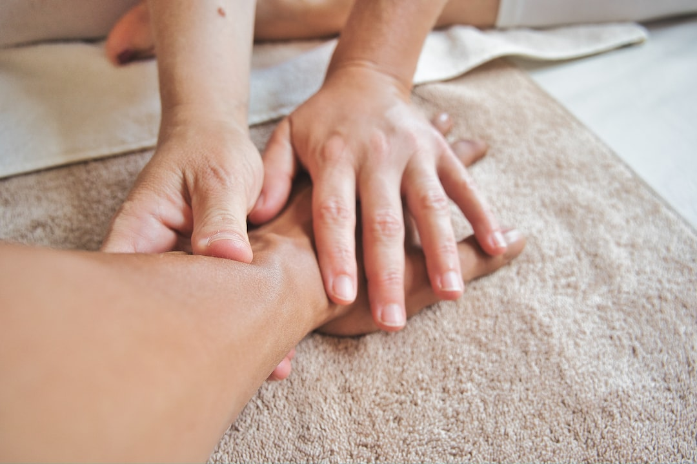

Technique manuelle douce, issue de l'ostéopathie méthode Poyet. Libère les maux du corps, les douleurs articulaires, les tensions aussi bien physiques qu'émotionnelles.
Vous avez des douleurs,
des problèmes émotionnels, relationnels,
vous êtes en phase de changement de vie ?
La somatopathie peut vous aider.
Quand faire appel à la somatopathie ?
Maux de dos, douleurs vertébrales, douleurs cervicales, sciatiques, lombalgies...
Accompagnement de confort de pathologies lourdes
Troubles respiratoire (asthme), gynécologiques, urinaires, digestifs Perturbations endocriniennes (règles douloureuses, insomnies, problèmes de thyroïde...)
Acceptation et estime de soi, deuil, burn-out, épuisement mental Troubles du comportement (anorexie, boulimie, addiction..) Stress, angoisse, peur, phobie
Troubles du sommeil, phobie scolaire, troubles du comportement, colères, tristesse
Symptômes liés à la grossesse: douleurs lombaires, hyperlordose, constipation, nausées, baby blues, dépression post-partum Pour le bébé: naissance difficile, sommeil difficile, régurgitation, difficulté pour téter, problématique de séparation
La somatopathie est une technique manuelle douce issue de l’ostéopathie développée par Maurice Raymond Poyet.
La méthode Poyet est une thérapie manuelle basée sur le MRP : mouvement respiratoire primaire. Ce MRP est un micro mouvement rythmique qui anime tous les tissus et les os de l’organisme. C’est le mouvement de vie a été décrit pour la première fois en 1945 par Sutherland, disciple de Andrew Taylor Still, inventeur de l’ostéopathie.
La somatopathie a été ensuite développée par un élève de Maurice Raymond Poyet. Elle consiste à mettre en lien les maux physiques et émotionnels, afin de corriger de façon durable les blocages et restaurer la mobilité des articulations, des muscles, des organes.
La somatopathie part du principe que notre corps constitue un réceptacle des souvenirs et traumatismes plus ou moins anciens. Il peut s’agir de nos propres expériences ou bien de celles de personnes de notre famille, qui nous les ont transmis consciemment ou non. Certains de ces souvenirs et émotions peuvent provoquer en nous un choc, un stress, un trouble, en réponse aux situations que nous rencontrons.
L’objectif de la somatopathie est justement de rétablir l’harmonie du corps et de l’esprit en agissant sur cette mémoire, qui la plupart du temps est inconsciente, par le biais de gestes manuels de correction spécifiques, très légers et d’une mise en conscience.
La somatopathie par son approche globale du corps, prend en compte l’aspect psycho-émotionnel qui peut être à l’origine de vos souffrances physiques, afin d’aider votre corps à retrouver son équilibre
Le Somatopathe ne pratique pas de manipulations : ni thrust vertébral ni cracking articulaire. Il ne pose pas de diagnostic médical et ne prescrit pas.
La somatopathie représente une approche complémentaire à la médecine française traditionnelle mais ne la remplace pas. Tout traitement en cours doit être poursuivi en accord avec le médecin traitant.
La somatopathie s’adresse à tous, bébés, enfants, adultes, femmes enceintes. Ce sont les symptômes physiques, corporels, comportementaux, qui guideront la séance, dans le respect de la personne et de ses limites. Les enfants devront être accompagnés d’un parent.
La séance dure entre 1 heure et 1h30. Elle est précédée d’un entretien permettant de connaître les antécédents et le terrain de la personne (digestion, allergies, qualité du sommeil, etc.).
Elle est suivie par une écoute attentive des différents mouvements subtils du crâne et par des corrections au sacrum (bas du dos) et aux pieds pour apporter un équilibre global au corps. Ensuite, le thérapeute dirigera la séance selon la demande en traitant par exemple une douleur à l’épaule, un problème au genou,etc.
Il n’y a aucune manipulation ni mobilisation structurelle de la colonne vertébrale.
Pendant les premiers jours après la séance, des réactions neurovégétatives peuvent apparaître (fatigue physique, psychique, émotionnelle), délai habituel où le corps retrouve ses marques et de nouveaux repères.
Suivant mon intuition et mon désir de prendre soin des autres, je me suis engagée en 2019 dans la formation de Pierre-Camille Vernet, fondateur de l’école de somatopathie®.
Cette formation en 4 ans nécessite l’étude de l’anatomie et des protocoles de la Somatopathie, issus de l'approfondissement des travaux du précurseur Maurice-Raymond Poyet, ostéopathe reconnu, qui a su passer d'une ostéopathie structurelle à une ostéopathie informationnelle.